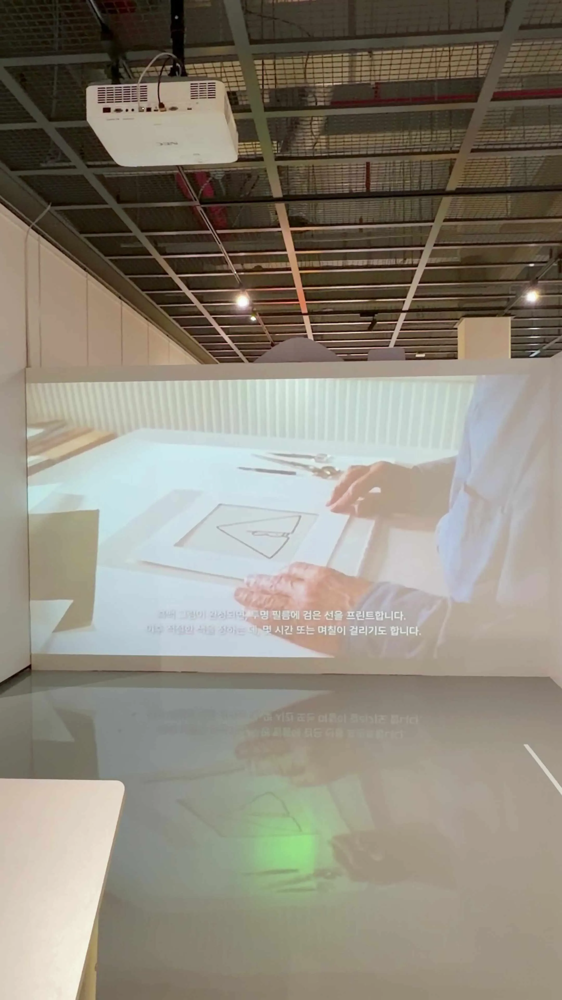
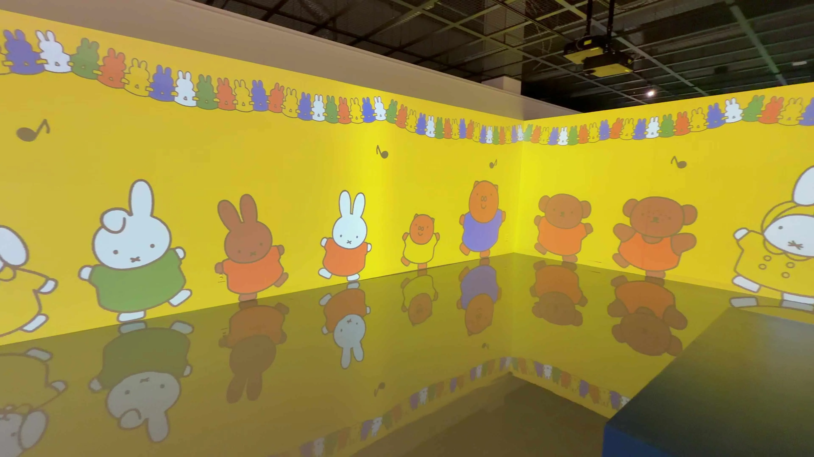

|
💌 70살 토끼가 오송으로 편지를 보냈다 |
— 청주에서 만난 「미피와 마법 우체통」, 그리고 미피의 70년 이야기

|
🐰 오송에서 미피를 만나고 왔다 |


주말에 청주 오송에 다녀왔다. 목적지는 충북갤러리 청주오스코관에서 열리고 있는 「미피와 마법 우체통 in 오송」. 그 새하얀 토끼, 미피(Miffy)의 70주년 기념 전시다. 솔직히 처음엔 ‘아이들 전시 아닌가’ 싶었는데, 막상 다녀와 보니 생각이 완전히 바뀌었다. 아이에게는 동화 같은 놀이터, 어른에게는 추억을 더듬는 시간. 미피를 보며 자란 세대라면 누구나 한 번쯤 가볼 만한, 잔잔하고 따뜻한 전시였다.
그런데 글을 쓰려고 미피에 대해 찾아보다가 깜짝 놀랐다. ‘그냥 귀여운 토끼’인 줄만 알았던 이 캐릭터 뒤에, 이렇게 깊고 재미있는 70년의 이야기가 숨어 있을 줄은 몰랐다. 그래서 오늘은 전시 후기와 함께, 내가 새로 알게 된 미피의 흥미로운 뒷이야기들을 잔뜩 풀어보려 한다. 미피를 좋아했다면, 분명 ‘오, 그래?’ 싶은 이야기가 많을 거다.
※ 이 글의 미피 역사·캐릭터·전시 정보는 위키백과·나무위키·언론 보도 등 공식 자료를 검색해 확인했다. 전시 사진은 직접 촬영한 것이다.


|
🏖️ 미피는 70년 전, 어느 바닷가에서 태어났다 |


미피의 시작은 의외로 ‘한 아빠의 즉흥적인 이야기’였다. 1955년, 네덜란드의 그래픽 디자이너 딕 브루너(Dick Bruna, 1927~2017)는 가족과 함께 에그몬트 안 제(Egmont aan Zee)라는 바닷가 마을로 휴가를 떠났다. 그러던 어느 날, 모래언덕에서 폴짝거리며 뛰노는 작은 토끼 한 마리를 보게 된다.
그때 그의 곁에는 이제 막 한 살이 된 아들 시에르크가 있었다. 브루너는 아이에게 잠자리에서 ‘그 토끼’ 이야기를 들려주기 시작했고, 정원에 찾아오는 작은 토끼의 이야기가 매일 밤 이어졌다. 그렇게 한 아버지가 아들을 위해 지어낸 이야기가, 그해 첫 그림책으로 태어난 것이 바로 미피다. ‘아빠가 본 해변의 토끼’가, 70년간 전 세계 아이들의 친구가 될 줄, 그땐 아무도 몰랐을 거다. 참고로 미피의 공식 생일은 6월 21일이고, 2025년에 정확히 70번째 생일을 맞았다.
|
아빠가 아들에게 들려준 ‘해변의 작은 토끼’ 이야기 — 그것이 미피의 시작이었다. |

|
🔤 사실 미피의 진짜 이름은 ‘미피’가 아니다 |

이건 나도 이번에 처음 알았는데, ‘미피’는 사실 본명이 아니다. 미피의 진짜 이름은 ‘나인체(Nijntje)’. 네덜란드어로 ‘작은 토끼’를 뜻하는 ‘코나인체(konijntje)’를 어린아이가 부르기 쉽게 줄인 애칭이다. 그러니까 네덜란드에 가서 ‘미피 어디 있어요?’ 하면 못 알아듣고, ‘나인체’라고 해야 알아듣는다는 얘기다.
그렇다면 ‘미피’라는 이름은 어디서 왔을까. 미피 그림책이 영어로 번역되어 세계로 퍼질 때, 브루너는 ‘어느 나라에서나 발음하기 쉬운 이름’을 원했다. ‘나인체’는 외국인이 발음하기 너무 어려웠기 때문이다. 그래서 번역가와 고심한 끝에, ‘발음이 쉽고, 어쩐지 토끼처럼 들린다’는 이유로 ‘미피(Miffy)’를 골랐다. 재밌는 건, 미피라는 이름 자체엔 ‘작은 토끼’ 같은 별다른 뜻이 없다는 것. 그저 ‘쉽고 귀엽게 들려서’ 붙은 이름이다. 그 단순함이 오히려 70년을 갔다.
|
✏️ 지금의 미피는 ‘여섯 번이나 바뀐’ 모습이다 |


우리가 아는 ‘동글동글 단순한 미피’는, 처음부터 그 모습이 아니었다. 1955년 첫 미피는 귀가 축 늘어진, 봉제 인형 같은 모습이었다. 지금처럼 ‘반듯하게 선 두 귀’의 미니멀한 토끼가 된 건 1963년 무렵. 그 뒤로도 미피는 무려 여섯 번에 걸쳐 조금씩 형태가 다듬어졌다. 그야말로 ‘끝없는 미니멀라이징(단순화)’의 역사다.
더 놀라운 건, 그 단순한 미피 한 마리를 그리는 데 무려 12단계의 정교한 작업이 필요했다는 사실이다. 선 몇 개로 끝나는 그림처럼 보이지만, 브루너는 ‘이 선이 최선인가’를 묻고 또 물으며 수없이 고쳐 그렸다. 그림책도 독특하다. 한쪽 면엔 딱 네 줄의 글, 반대쪽엔 그림 하나. 그렇게 단 12장의 그림 안에서 하나의 이야기가 완결된다. 정사각형의 작은 판형 안에, 군더더기 없이 핵심만 담은 것이다. ‘단순함’이 사실은 가장 어려운 일이라는 걸, 미피가 증명한다.
|
🎨 미피는 왜 늘 같은 옷을 입고, 색은 왜 네 가지뿐일까 |


전시에서 미피의 파란 꽃무늬 원피스가 유독 자주 보였는데, 여기에도 사연이 있다. 1955년부터 1970년까지, 사실 미피는 ‘성별이 모호한’ 캐릭터였다. 그러다 1970년 「미피의 특별한 생일」에서, 원피스에 흰 꽃무늬를 그려 넣으며 ‘소녀 토끼’로 확정됐다. 그래서 그 파란 꽃무늬 원피스는 미피의 ‘생일 시그니처 의상’이 됐고, 생일 에피소드마다 등장한다. (평소엔 단색 옷을 입는 경우가 더 많다.)
색깔에도 철학이 있다. 미피의 세계는 ‘브루너 컬러(Bruna Color)’라 불리는 단순한 원색으로 이뤄져 있다. 빨강·파랑·초록·노랑 같은 몇 가지 따뜻한 원색만 고집스럽게 사용한다. 브루너는 이 색들에 감정을 담았다고 한다. 빨강은 즐거움, 파랑은 불안, 초록은 자연, 노랑은 따뜻함. 아이들이 세상을 긍정적이고 안정적으로 받아들이도록, 일부러 복잡한 색을 빼고 ‘가장 본질적인 색’만 남긴 것이다. 화면 가득 원색이 차 있는데도 촌스럽지 않고 따뜻한 이유가, 바로 이 고집에 있었다.


|
🖌️ ‘미피의 아버지’ 딕 브루너라는 사람 |


미피를 이야기하려면 그 아버지, 딕 브루너를 빼놓을 수 없다. 그는 네덜란드 최대 출판사를 운영하던 집안의 아들이었다. 아버지는 그가 가업을 잇길 바랐지만, 브루너는 ‘예술가’의 길을 택했다. 젊은 시절 파리에 머물며 마티스, 피카소, 레제 같은 거장들의 영향을 받았는데, 특히 ‘색과 형태를 단순하게 쓰는’ 마티스에게 깊이 매료됐다.
흥미로운 건, 정작 본인은 ‘나는 화가로서 재능이 없고, 원근법도 못 그린다’고 회고했다는 점이다. 하지만 그 ‘못 그린다’는 한계가, 오히려 미피라는 위대한 단순함을 낳았다. 그는 출판사에서 2,000권이 넘는 책 표지를 디자인한 뒤, 1968년부터는 미피에만 집중했다. 그리고 그가 남긴 말이 인상적이다. ‘줄이고 또 줄여서 본질적인 것만 남기는 것. 그것은 생략의 기술, 단순함의 힘이다.’ 한 가지 더 귀여운 사실은, 60세가 넘은 뒤 그는 자신을 ‘미피의 아버지’가 아니라 ‘미피의 할아버지’로 불러달라고 했다고 한다.

▶ 💌 70살 토끼가 오송으로 편지를 보냈다 — 청주에서 만난 「미 (1) — 네이버 원문에서 재생|
“줄이고 또 줄여서 본질만 남긴다. 그것은 생략의 기술, 단순함의 힘이다.” — 딕 브루너 |
|
👨👩👧 미피 곁의 친구들 — 전시에서 만난 얼굴들 |


전시장 한쪽에는 미피의 가족과 친구들을 소개하는 캐릭터 카드들이 있었다. 미피가 ‘혼자’가 아니라, 70년간 다양한 친구들과 함께해 왔다는 걸 보여주는 코너였다. 카드를 보며 ‘얘는 누구더라?’ 하나하나 맞춰보는 재미가 쏠쏠했다.
대표적인 얼굴들을 보면, 빨간 옷에 붓을 든 미피는 ‘그림 그리기’를 좋아하는 설정이다. 갈색 토끼 친구 멜라니(Melanie), 초록 옷의 돼지 뽀삐(Poppy), 그리고 점박이 원피스의 앨리스 고모(Aunt Alice)까지. 특히 앨리스 고모는 1982년 「미피와 자전거」에서 처음 등장했는데, 아코디언 연주와 과자 굽기가 특기인 다정한 캐릭터다.
미피가 자전거를 타고 직접 만나러 갈 만큼 좋아하는 인물이다. 이 밖에도 곰 보리스와 바바라(1989년 등장), 개 스너피(1969년 등장) 등, 저마다 등장 연도가 다른 친구들이 미피의 세계를 풍성하게 채우고 있었다. 캐릭터마다 ‘언제 태어났는지’가 다 기록돼 있다는 게, 70년 역사의 무게를 실감하게 했다.

|
⚖️ 미피 vs 헬로키티 — 그 유명한 ‘토끼 전쟁’ |

이건 정말 흥미로운 뒷이야기다. 혹시 ‘미피랑 헬로키티 친구(케시)랑 닮았다’는 말, 들어본 적 있는가? 실제로 두 회사가 법정 다툼까지 벌였다. 발단은 헬로키티의 친구 캐릭터 ‘케시(Cathy)’였다. 흰 토끼에 단순한 얼굴이, 누가 봐도 미피와 닮았던 것이다.
결국 2010년, 브루너 측(메르시스 BV)이 산리오(헬로키티 회사)를 상대로 소송을 제기했다. 그리고 네덜란드 법원은 미피의 손을 들어줬다. 케시 상품은 네덜란드·벨기에·룩셈부르크에서 판매가 금지됐고, 결국 케시 캐릭터는 세계적으로 생산이 중단됐다. 그런데 이 이야기의 진짜 ‘반전’은 결말에 있다.
마침 그 시기에 동일본 대지진이 일어나자, 두 회사는 법정 다툼을 멈추고 ‘소송 비용을 지진 피해자들을 돕는 데 기부’하기로 합의한 것이다. 캐릭터 전쟁이 ‘훈훈한 기부’로 끝난 셈이다. 참고로 딕 브루너 본인은 ‘헬로키티가 미피를 모방한 것’이라고 언급한 적도 있다.
|
🏆 미피가 가진, 믿기 힘든 기록들 |


70년을 살아온 캐릭터답게, 미피는 별별 기록을 다 가지고 있다. 가장 놀라운 건 ‘세계에서 생일 카드를 가장 많이 받은 캐릭터’로 기네스북에 올랐다는 사실이다. 2000년 탄생 45주년 때 80개국 이상에서 무려 37,865장의 생일 카드가 모였고, 2005년 50주년엔 43개국에서 39,670장이 모이며 기록을 새로 썼다.
이건 좀 웃긴 기록인데, 2008년 페루에서 발견된 신종 ‘책좀벌레’의 학명이 ‘Trichadenotecnum miffy’다. 배 끝부분 모양이 작은 토끼를 닮았다는 이유로 미피의 이름이 붙은 것이다. 곤충 학명에까지 이름을 남긴 토끼라니.
그뿐 아니다. 미피 그림책은 50여 개국 언어로 번역되어 8,500만 부 이상 판매됐고, 미피는 유니세프(UNICEF)의 홍보대사로 활동하며 전 세계 아동을 돕는 데도 앞장섰다. 아들을 향한 아빠의 사랑에서 태어난 캐릭터가, 결국 ‘세상 모든 아이를 돕는 토끼’가 된 셈이다. 이런 배경을 알고 나니, 그 단순한 그림이 한층 다르게 보였다.
|
💌 ‘마법 우체통’ — 여섯 통의 편지를 따라서 |


이제 전시 이야기다. 「미피와 마법 우체통」은 그 이름처럼, ‘편지’를 콘셉트로 한 전시다. 안내문에는 ‘미피의 70여 년 역사를 담은 메시지가 거대한 우체통에 모였다’고 적혀 있었다. 관람객은 여섯 통의 편지를 따라가듯, 여섯 개의 테마 공간을 차례로 통과하게 된다. 각 공간이 하나의 ‘편지’인 셈이다.
첫 번째 편지 ‘사랑이 깃든 보금자리’는 미피가 태어난 따뜻한 가족의 품을,
두 번째 ‘함께 배우는 시간’은 학교에서 친구들과 어울리며 배려를 배우는 미피를 그린다.
세 번째 ‘세상과 만나는 리틀 스퀘어’는 마을 광장으로 나아가는 용기를,
네 번째 ‘용기와 성장의 숲’은 푸른 숲에서의 숨바꼭질 같은 모험을 담았다.
다섯 번째 ‘별빛으로 물든 꿈’은 긴 하루를 마친 노을의 풍경을,
마지막 여섯 번째 ‘영원이 머무는 밤’은 ‘미피가 태어난 지 70년, 단순함 속에 담긴 메시지와 예술 철학’을 돌아보는 공간이다.
미피의 하루(아침→학교→마을→숲→노을→밤)를 따라가는 동선이, 곧 ‘미피의 70년 인생’과 겹쳐지도록 구성한 게 인상적이었다.
|
🎡 직접 걸어본 전시 — 원화부터 인생네컷까지 |


실제로 걸어보니, 전시는 ‘보는 것’과 ‘즐기는 것’이 알차게 섞여 있었다. 입구에서 미피가 걸어온 70년의 길과 ‘미피에 대하여’를 소개하는 코너로 시작해, 앞서 말한 가족·친구 캐릭터 소개, 그리고 미피 그림책(만화) 코너가 이어졌다. 무엇보다 좋았던 건 딕 브루너의 미피 원화(그림)를 직접 볼 수 있다는 점이었다. 인쇄물로만 보던 그 단순한 선들을, ‘작가의 손길’로 마주하니 느낌이 또 달랐다.



▶ 💌 70살 토끼가 오송으로 편지를 보냈다 — 청주에서 만난 「미 (2) — 네이버 원문에서 재생아이들이 특히 좋아할 참여형 게임 코너와 영상·애니메이션 존도 곳곳에 있었다. 미피 애니메이션을 감상하는 공간도 있어서, 잠시 앉아 쉬며 보기 좋았다. 그리고 전시의 ‘피날레’는 역시 굿즈샵. 미피 굿즈가 어찌나 많던지, ‘이건 사야 해’ 싶은 것들이 한가득이었다. 마지막엔 미피 인생네컷으로 방문을 기념할 수도 있었다. ‘보고, 배우고, 놀고, 사고, 남기는’ 다섯 박자가 다 갖춰진 전시랄까. 어른인 내가 봐도 시간 가는 줄 몰랐으니, 아이들에겐 두말할 것도 없겠다 싶었다.


|
🗂️ 「미피와 마법 우체통 in 오송」 관람 정보 |
|
· 전시 기간 2026. 5. 7(목) ~ 2026. 8. 23(일) / 월요일 휴관 · 장소 충북갤러리 청주오스코관 (충북 청주시 흥덕구 오송읍 오송생명로 250) · 관람 시간 10:00 ~ 18:00 (입장 마감 17:30) · 관람 요금 성인(19~64세) 15,000원 / 청소년·어린이(36개월~18세) 12,000원 · 특별 할인 경로·장애인(동반 1인)·군경소방·유공자 등 9,000원 · 주최·주관 충북문화재단 · 피플리(PEOPULLEY) / 후원 네덜란드 왕국 |


|
🌙 어른이 된 우리에게, 미피가 건네는 편지 |
전시를 다 보고 나오면서 든 생각은, ‘미피는 결국 ‘단순함’에 대한 이야기였구나’ 하는 거였다. 70년 전 한 아빠가 아들에게 들려준 작은 토끼 이야기가, 수없이 ‘줄이고 줄여’ 가장 본질만 남긴 끝에, 전 세계가 사랑하는 캐릭터가 됐다. 선 몇 개와 원색 몇 가지. 그게 전부인데도, 미피 앞에 서면 이상하게 마음이 차분하고 따뜻해진다.


이 전시가 ‘아이들만을 위한 것’이 아니라고 느낀 이유가 거기 있다. ‘미피를 보며 자란 어른들에게 건네는, 한 통의 편지 같은 전시’였달까. 복잡하고 시끄러운 세상에서 잠깐 벗어나, ‘단순하고 다정했던 것들’을 다시 만나는 시간. 그래서 아이 손을 잡고 온 가족도, 추억을 더듬으러 온 어른도 모두 흐뭇하게 웃고 있었다.
청주 오송 쪽에 갈 일이 있다면, 혹은 ‘동화 같은 하루’가 필요하다면 — 이 마법 우체통에 들러, 미피가 보낸 편지를 한 번 받아보시길. 전시는 8월 23일까지니, 여름의 끝자락 나들이로도 딱 좋겠다.
|
70년을 줄이고 줄여 남은 것은, 결국 ‘단순함’과 ‘다정함’이었다. |

#미피와마법우체통 #미피전시 #미피70주년 #청주전시 #오송전시 #충북갤러리 #딕브루너 #미피 #nijntje #주말나들이 #키덜트전시 #미피굿즈